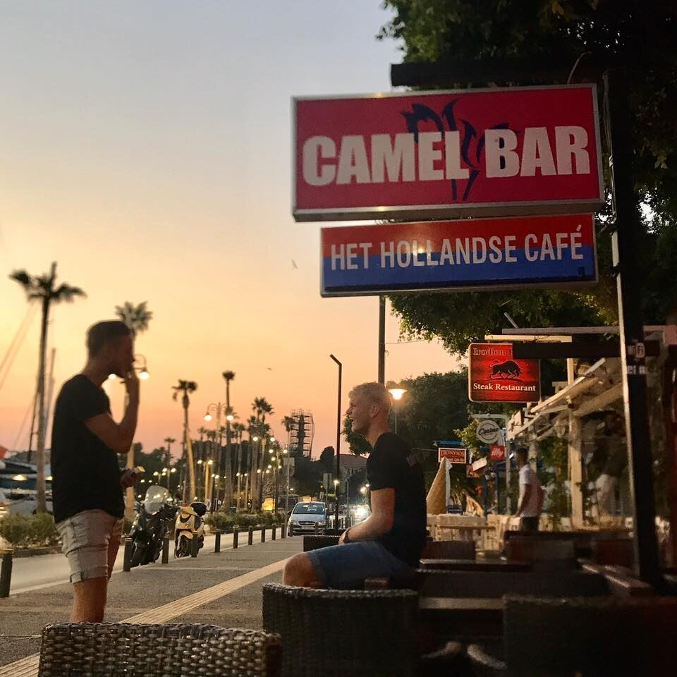
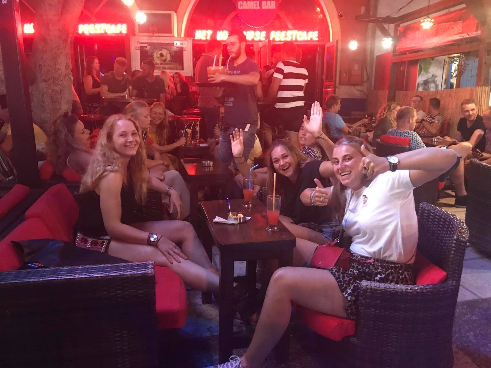
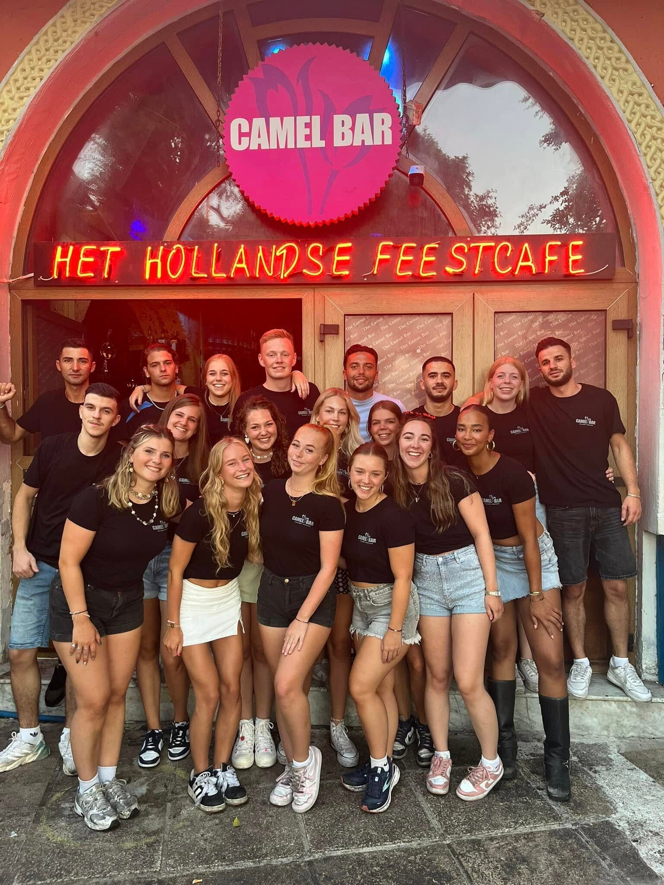

Kos-stad, centrum
Check Camel Bar, een iconische feestbar voor wie er als toerist is, in het hart van Kos-stad, pal aan de haven.

Deze Hollandse feestcafé-stijl bar bestaat al sinds 1997 en is een vaste plek voor wie zin heeft in een levendige avond met cocktails, shots, muziek met gezellige Nederlands personeel.

Het is vooral populair bij mensen die er als toerist zijn en houden van een uitbundige sfeer met DJ's, themafeesten en late uurtjes – perfect voor barhoppen of een wilde start van de nacht.

De locatie aan de drukke havenstraat maakt het makkelijk te vinden en ideaal om mensen te kijken of door te gaan naar andere spots. Een klassieker voor feestgangers op Kos!
Adres
Akti Kountouriotou 15, Kos-stad
Telefoon
Openingstijden
Openingstijden kunnen seizoensgebonden wijzigen.